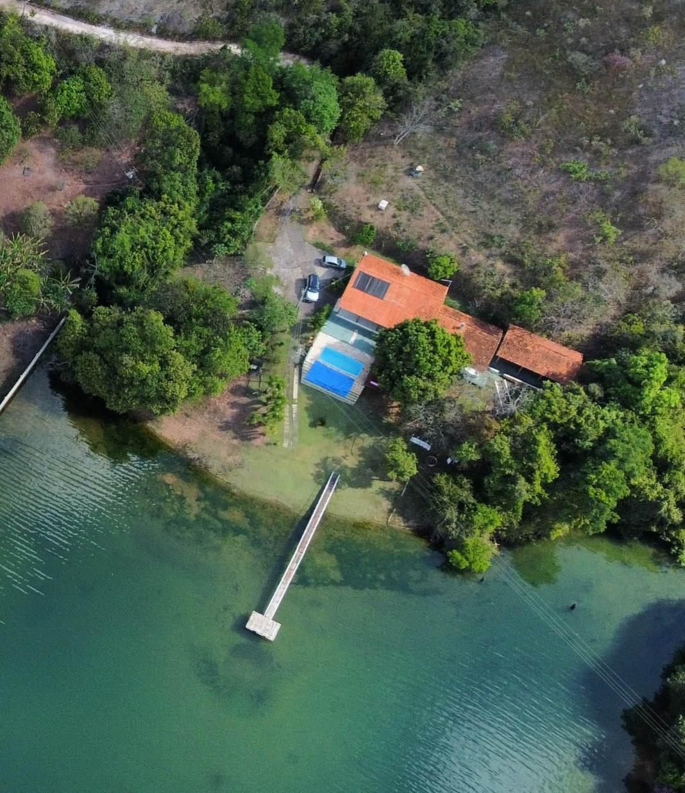
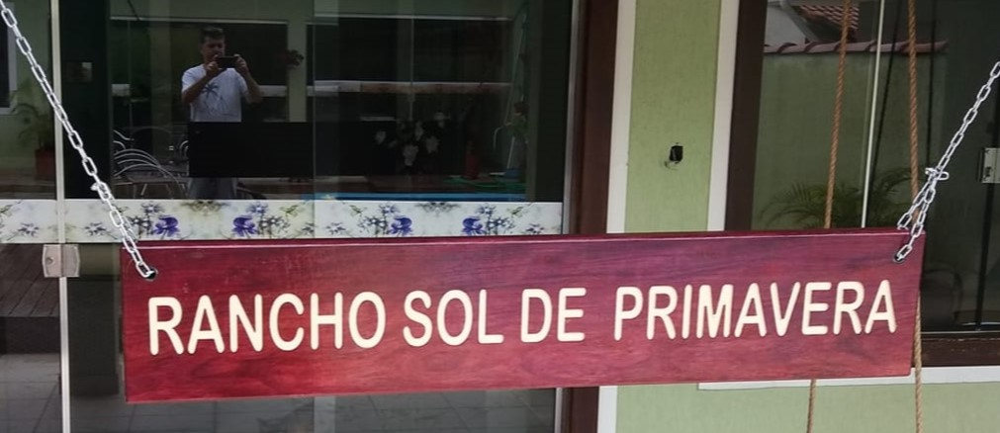
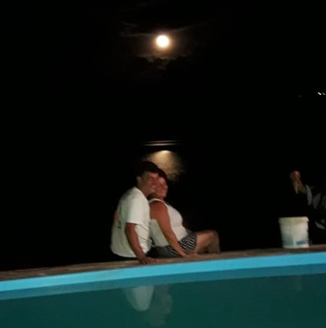
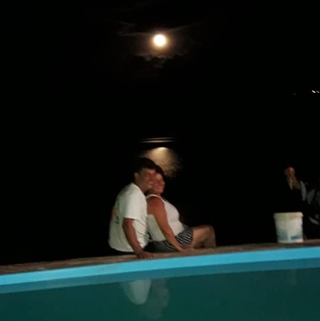
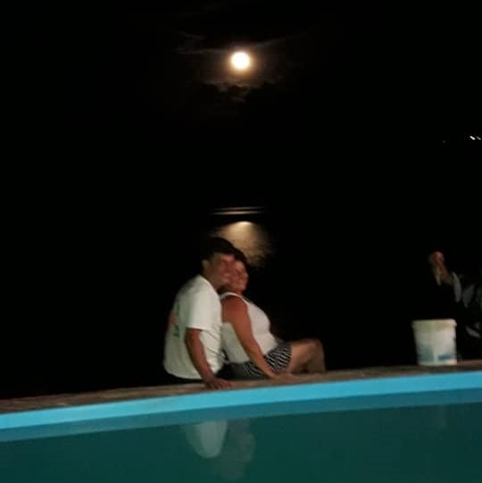

Aqui é o destino ideal para você e sua família desfrutarem de momentos inesquecíveis. Com uma localização privilegiada, cercada por natureza exuberante, uma experiência única e relaxante.

Destaques do Rancho:
- Acomodações Aconchegantes: Nossa área interna com 3 quartos, 1 suíte e 1 banheiro comporta até 20 pessoas. Perfeitos para casais, famílias ou grupos de amigos.
- Lazer ao Ar Livre: Explore nossos vastos terrenos e desfrute de atividades como trilhas a pé, passeios a cavalo, pesca e muito mais.
- Piscina Relaxante: Refresque-se em nossa piscina enquanto aprecia a vista deslumbrante da paisagem ao redor.
- Churrasco e Área de Piquenique: Reúna-se com seus entes queridos para um churrasco delicioso ou um piquenique sob o sol.
Reserve Agora:
Não perca a chance de experimentar a serenidade e a beleza do Rancho Sol de Primavera. Entre em contato conosco hoje mesmo para fazer sua reserva e garantir seu final de semana perfeito. Estamos ansiosos para recebê-lo!
Contato
📞 Telefone: (16) 99177-2545
Hélio e Arilda
Rancho Sol de Primavera foi construído pelas mãos de Hélio Leandro de Oliveira e Arilda Rodrigues Oliveira, ambos cuidaram e aprimoraram toda a estrutura do ambiente, que hoje é local para diversas famílias curtirem um momento de paz
e tranquilidade.


Memorial para meu Pai
Este projeto foi desenvolvido para a aula de Desenvolvimento Web I, meu primeiro projeto no curso DSM Fatec Franca e é em homenagem a meu pai, Hélio (28/11/1967 - 26/10/2022).
.jpg) 
